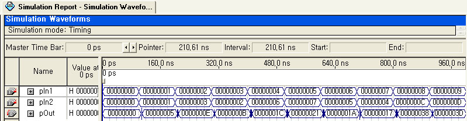
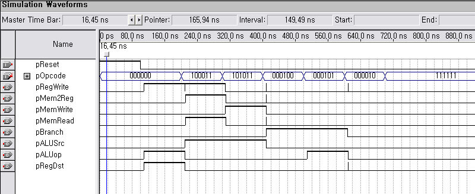

Step 1 - Adder (32-bit input + 4)
-
[Move to contents]
Used for adding 4 to PC (program counter).
Test in&out
[Project file download]
Step 2 - Sign extender
-
[Move to contents]
Extend 16-bit immediate value to 32-bit value by extending its sign.
Test in&out
[Project file download]
Step 3 - 2-to-1 multiplexer (5-bit and 32-bit)
-
[Move to contents]
For example, 32-bit MUX is used for selecting the correct next value of PC and 5-bit MUX is used for selecting the correct register number.
Test in&out - 5bits MUX
Test in&out - 32bits MUX
[Project file download:5bits, 32bits]
Step 4 - 2-bit-shift adder
-
[Move to contents]
Before the addition, convert word address to byte address by shifting by 2 bits. (Default setting of SPIM simulator is not delayed branch. Therefore, we subtract 4 from the address. See the "information for Task 1" document for more details.)
Test in&out

[Project file download]
Step 5 - PC (Program Counter)
-
[Move to contents]

If the clock signal is on the rising edge and the value of the reset signal is 0, the PC value is updated. If the clock signal is on the rising edge and the value of the reset signal is 1, the PC value becomes zero. Otherwise, the PC value does not change.
Test in&out
[Project file download]
Step 6 - Instruction & Data memory
-
[Move to contents]
We use the LPM library to implement the instruction memory and data memory with FPGA. See the "information for Task 1" document for more details.
Test in&out - Instruction memory

Test in&out - Data memory
Project file download:[Instruction memory][Data memory]
Step 7 - Register file
-
[Move to contents]
If the clock signal is on the rising edge and the value of the reset signal is 1, the eight registers are initialized. If the clock signal is on the rising edge and the value of the reset signal is 0 and the value of the write signal is 1 and the address of the selected register is not zero, the value of the selected register is updated.
The zero register(r0) always contains the value of 0.
Test in&out
[Project file download]
Step 8 - Control unit
-
[Move to contents]
This unit implements the control signal generator. (The meaning of the ALUop signal is different from that in the textbook. See the "information for Task 1" document for more details.)
opcode 000000: R-type instruction
opcode 100011: lw
opcode 101011: sw
opcode 000100: beq
opcode 000101: bne
Test in&out

[Project file download]
Step 9 - ALU ( Arithmetic and Logic Unit )
-
[Move to contents]
"Operation = 1" means that it is an R-type instruction or the "bne" instruction.
"Branch = 1" means that it is the "beq" or "bne" instruction.
In addition to calculating the memory address for "lw" and "sw" instructions, ALU supports seven operations (ADD, SUB, AND, OR, SLT, BEQ and BNE).
Operation = 0 and Branch = 0 -> lw, sw instruction
Operation = 0 and Branch = 1 -> beq instruction
Operation = 1 and Branch = 0 and Out = ln1 + ln2 -> add instruction
Operation = 1 and Branch = 0 and Out = ln1 - ln2 -> sub instruction
Operation = 1 and Branch = 0 and Out = ln1 & ln2 -> and instruction
Operation = 1 and Branch = 0 and Out = ln1 | ln2 -> or instruction
Operation = 1 and Branch = 0 and Out = if(ln1 less than ln2) 1 else 0 -> slt instruction
Operation = 1 and Branch = 1 -> bne instruction
Test in&out
[Project file download]
Step 10 - Build top-entity (i.e., single-cycle MIPS processor)
Hint: Take a look at the project file for the "IF" stage in Phase 2 - it shows how we can build a top-level entity using existing components.
-
[Move to contents]
You can build the single-cycle MIPS processor using the components developed in Step 1 through Step 9.
[Test program - bubble sort in assembler form]
You can use the "SPIM" simulator to convert this assembler code into a binary (hexadecimal) form which can subsequently be used to initialize the "Imem.mif" file.
We also provide the hexadecimal code for the test program for your convenience:
[Test program - bubble sort in hexadecimal form]
Test in - Data memory initialize
Test in&out - timing simulation - click to enlarge